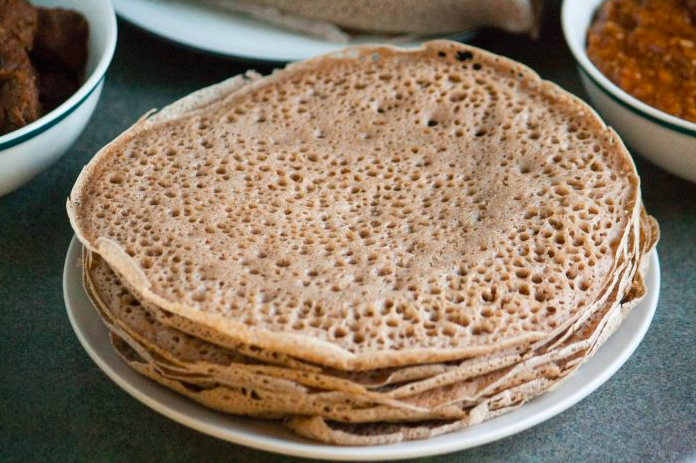

Injera (Ethiopian flat bread)

History of the dish
Injera is key to many Ethiopian dishes as it serves as a healthy and filling utensil.This recipe will take a number of days as you pepare "starter" similar to a sour dough.
Ingredients
- Teff powder
- water
- yeast or 'leet' (injera starter)
- Large flat surface to cook on (think of cooking a large crepe)
- time
Steps to cook
- Will add in steps once Mahlet tells me the secrets
- .....
- Enjoy!